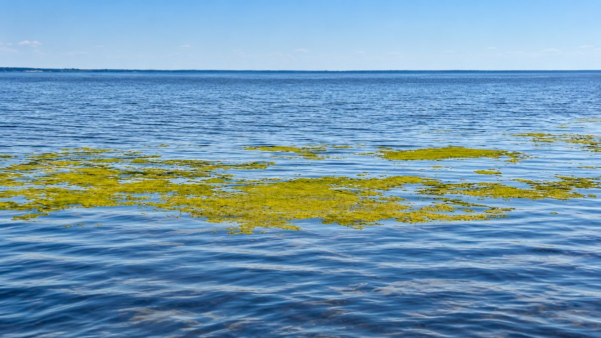

Ongoing explorationGoksjø water quality
I'm exploring water quality and cyanobacteria in Goksjø, and how satellite data, maps and local observations can help identify patterns and follow changes over time.
The focus is on what these data can reveal about spatial patterns and change, with local observations providing context for interpreting satellite signals.